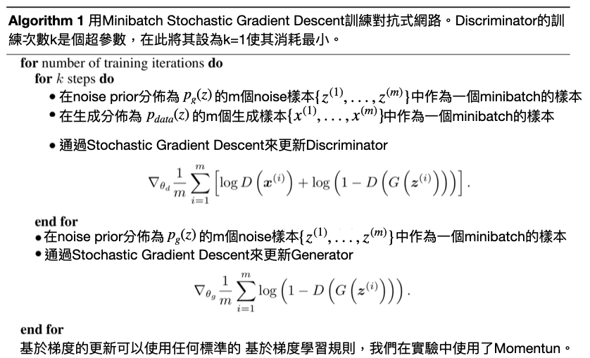

Generative Adversarial Network
前言
GAN基本的概念前一篇有稍微介紹過了，然而要怎麼證明這個概念要如何套用到類神經網路呢?Goodfellow透過了Minimax Theorem來訓練網路，詳細證明過程可以看Scott Rome的Blogger，裡面有很詳細的介紹了怎麼透過Shannon Entropy跟Kullback-Leibler Divergence來一步一步的證明怎麼可以收斂(Nash Equilibrium)。
下面是整個GAN的Objective Function：
$$
\LARGE{\min_{G}\max_{D}V(D,G)=\mathbb{E}_{x\sim p_{data}(x)}[\log D(x)]+\mathbb{E}_{z\sim p_z(z)}[\log (1-D(G(z)))]}
$$
演算法
我把GAN的演算法翻成中文：

Adversarial Attack
在網路上找資料的時候，看到一篇Goodfellow在OpenAI發的Adversarial Example，上面有一個例子：

這些例子大多是在圖像分類任務中找到的，這代表了當時的深度學習模型可能不穩定，也有可能會被惡意利用導致有安全疑慮。Adversarial Attack主要是將圖片加上特定的bias就可以讓分類器誤判，讓研究者對模型的信心下降、也有可能利用這個漏洞製造出一個特定的輸出，當然也可能反過來，把一個特定的輸入修改到讓輸出是特定值。
同樣的道理，我們可以透過對抗用Generator使分類器獲得的樣本多樣性更高，或者說分佈更廣些，也就是這樣會加強模型，讓模型的泛化性更高，詳細的內容可以看網站上的敘述，除了上面圖片的例子，Goodfellow還用了其他類別的資料來展示，有興趣的可以去研讀一下那篇文章。
前處理和類神經網路
資料集 & 網路架構
這邊使用MNIST當作訓練資料，不過因為是要訓練GAN所以要訂出一個noise，而這邊的noise主要是為了Generator在產生圖片的時候用的，因為在每個Epoch都使用固定的noise當作網路的輸入，就可以觀察到對於同樣noise的輸出圖片在訓練過程中的變化了：
1
2
3
4
5
6
7
8
9
10
11
12
13
14
15
16
| import tensorflow as tf
from tensorflow.keras.datasets.mnist import load_data
from args import parser
opts = parser()
[(train_x, train_y), (test_x, test_y)] = load_data('mnist.npz')
train_images = train_x.reshape(train_x.shape[0], 28, 28, 1).astype('float32')
train_images = (train_images - 127.5) / 127.5
train_dataset = tf.data.Dataset.from_tensor_slices(train_images)
train_dataset = train_dataset.shuffle(opts.BUFFER_SIZE)
train_dataset = train_dataset.batch(opts.BATCH_SIZE)
noise = tf.random.normal([opts.num_examples_to_generate, opts.noise_dim])
|
對於網路的架構，我簡單的使用全連結層來架構Generator跟Discriminator，而非擅長處理圖像資料的CNN：
1
2
3
4
5
6
7
8
9
10
11
12
13
14
15
16
17
18
19
20
21
22
23
24
25
26
27
28
29
30
31
| import tensorflow as tf
from tensorflow.keras import Model, layers
class Dis_Net(Model):
def __init__(self):
super(Dis_Net, self).__init__(self)
self.Dense = tf.keras.Sequential([
layers.Flatten(),
layers.Dense(512, activation='relu'),
layers.Dense(256, activation='relu'),
layers.Dense(128, activation='relu'),
layers.Dense(1)])
def call(self, vec):
output = self.Dense(vec)
return output
class Gen_Net(Model):
def __init__(self, channels=1):
super(Gen_Net, self).__init__(self)
self.channels = channels
self.Dense = tf.keras.Sequential([
layers.Dense(128, activation='relu'),
layers.Dense(256, activation='relu'),
layers.Dense(512, activation='relu'),
layers.Dense(28 * 28 * self.channels, activation='tanh'),
layers.Reshape((28, 28, self.channels))])
def call(self, vec):
output = self.Dense(vec)
return output
|
Gen & Dis Net and Optimizer
將Generator跟Discriminator還有Optimizer定義出來，跟一般訓練網路不太一樣，Optimizer有兩個，分別對應Generator跟Discriminatotr，然後Optimizer我使用的是Adam：
1
2
3
4
5
| Generator = Gen_Net()
Discriminator = Dis_Net()
G_opt = tf.keras.optimizers.Adam(opts.lr, opts.beta_1)
D_opt = tf.keras.optimizers.Adam(opts.lr, opts.beta_1)
|
Loss的部分對於Disciminator跟Generator用的是Binary的Cross Entropy：
1
2
3
4
5
6
7
8
9
10
11
12
13
14
15
16
| import os
import tensorflow as tf
from args import parser
opts = parser()
cross_entropy = tf.keras.losses.BinaryCrossentropy(from_logits=True)
def generator_loss(fake_output):
return cross_entropy(tf.ones_like(fake_output), fake_output)
def discriminator_loss(real_output, fake_output):
real_loss = cross_entropy(tf.ones_like(real_output), real_output)
fake_loss = cross_entropy(tf.zeros_like(fake_output), fake_output)
return real_loss, fake_loss
|
訓練過程
訓練過程跟其他的差不多，計算loss、更新網路的過程、記錄需要紀錄的各個參數等等。
Each Epoch Training
對於網路的訓練跟一般比較不一樣，主要是因為這邊有兩個網路需要更新，所以會有兩個GradientTape分別來更新兩個網路。其中loss是一個list，裡面每一個item是一個tf.keras.metrics.Mean()，用來記錄各個loss：
1
2
3
4
5
6
7
8
9
10
11
12
13
14
15
16
17
18
19
20
21
22
23
| @tf.function
def train_step(images, loss):
noise = tf.random.normal([opts.BATCH_SIZE, opts.noise_dim])
with tf.GradientTape() as gen_tape, tf.GradientTape() as disc_tape:
generated_images = Generator(noise, training=True)
real_output = Discriminator(images, training=True)
fake_output = Discriminator(generated_images, training=True)
gen_loss = generator_loss(fake_output)
real_loss, fake_loss = discriminator_loss(real_output, fake_output)
disc_loss = real_loss + fake_loss
loss[0].update_state(real_output)
loss[1].update_state(fake_output)
loss[2].update_state(gen_loss)
loss[3].update_state(disc_loss)
gradients_of_gen = gen_tape.gradient(gen_loss, Generator.trainable_variables)
gradients_of_dis = disc_tape.gradient(disc_loss, Discriminator.trainable_variables)
G_opt.apply_gradients(zip(gradients_of_gen, Generator.trainable_variables))
D_opt.apply_gradients(zip(gradients_of_dis, Discriminator.trainable_variables))
|
Whole Training Process
將前面所寫的兜在一塊就是整體的訓練過程：
1
2
3
4
5
6
7
8
9
10
11
12
13
14
15
16
17
18
19
20
21
22
23
24
25
26
27
28
29
30
31
32
33
34
35
36
37
38
39
40
41
42
43
44
45
46
| def train(train_dataset):
log_path = os.path.join(opts.LOG_PATH)
if not os.path.exists(log_path):
os.mkdir(log_path)
csv_path = os.path.join(log_path, 'loss.csv')
with open(csv_path, 'w') as f:
f.write('epoch,Real_P,Fake_P,Gen_loss,Dis_loss\n')
format_str = '{:5d},{:.6f},{:.6f},{:.6f},{:.6f}\n'
dis_r_p = tf.keras.metrics.Mean()
dis_f_p = tf.keras.metrics.Mean()
G_loss = tf.keras.metrics.Mean()
D_loss = tf.keras.metrics.Mean()
loss = [dis_r_p, dis_f_p, G_loss, D_loss]
for epoch in range(opts.epochs):
start = time.time()
for image_batch in tqdm(train_dataset.as_numpy_iterator()):
train_step(image_batch, loss)
with open(csv_path, 'a') as f:
f.write(format_str.format(epoch,
loss[0].result().numpy(),
loss[1].result().numpy(),
loss[2].result().numpy(),
loss[3].result().numpy()))
loss[0].reset_states()
loss[1].reset_states()
loss[2].reset_states()
loss[3].reset_states()
generate_and_save_images(Generator,
epoch + 1,
noise)
if (epoch + 1) % 15 == 0:
Gen_save_path = os.path.join(opts.MODEL_PATH, 'Generator')
Dis_save_path = os.path.join(opts.MODEL_PATH, 'Discriminator')
Generator.save_weights(Gen_save_path)
Discriminator.save_weights(Dis_save_path)
print ('Time for epoch {} is {:.3f} sec'.format(epoch + 1, time.time()-start))
time.sleep(0.2)
|
Result
在這個Demo中，每個Epoch都用前面設定的固定noise生成16張圖片，以下訓練過程中的變化：

結論
一直知道GAN是一個很強也很好用的技術，但是一直沒機會接觸到，直到最近終於有機會來學習這個技術，這個是目前火紅的GAN的原型，其他的GAN我再找時間一一實現，畢竟這是一個系列文(雖然更的很慢XD)。
Github：GAN-01 Generative Adversarial Network